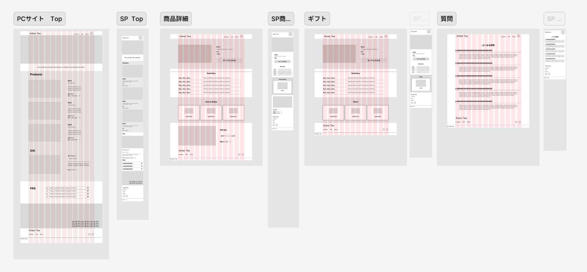
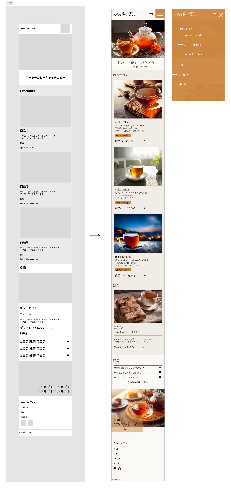
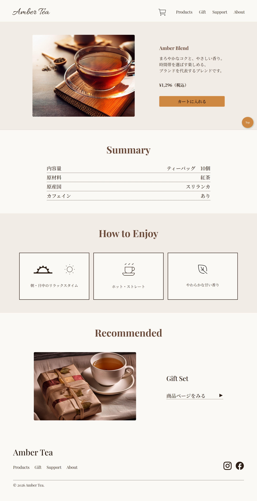
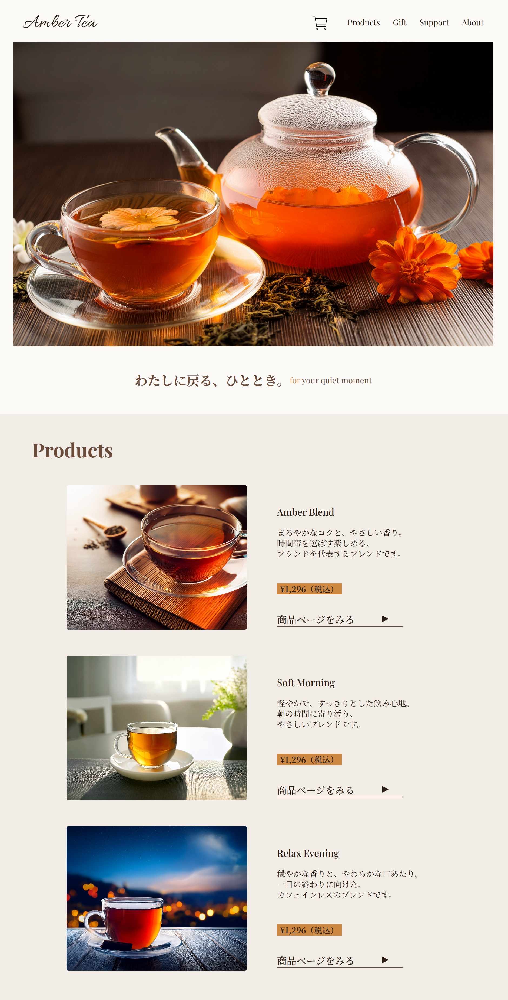
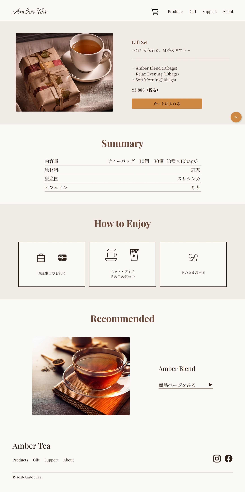
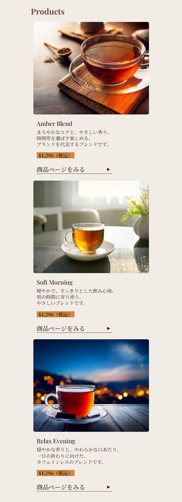
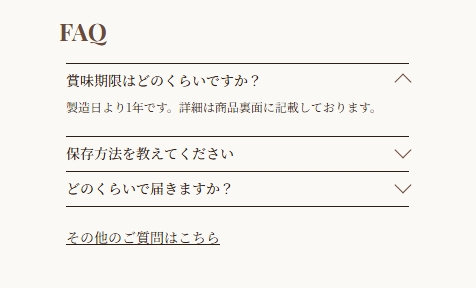
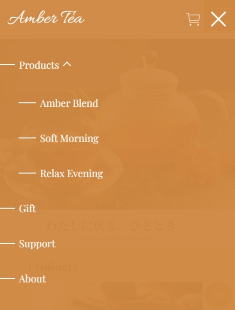

Other Works
Online Tea Shop — Personal Project
架空の紅茶ブランドを想定し、企画・設計・デザイン・実装まで
一貫して制作した自主制作プロジェクトです。
紅茶のオンラインショップにおいて、 ブランドの「やさしさ・くつろぎ」の世界観を保ちながら、 忙しいユーザーでも迷わず購入できる シンプルな導線を設計する必要がありました。
商品を3種＋ギフトに絞り、情報を整理。 トップページで全商品の特徴が把握でき、 商品詳細→カートまで最短で進める シンプルな画面構成にしました。
ECサイト特有のUI（商品一覧・詳細・カート・FAQ）を 一通り設計・実装する経験ができました。 世界観と使いやすさの両立が最大の学びです。
ターゲットを「忙しい日常の中で、ほっとする時間を大切にしたい女性」に設定。
「Amber Tea」というブランド名、「わたしに戻る、ひととき。」の
コンセプトコピーを考案しました。
商品ラインナップ（Amber Blend / Soft Morning / Relax Evening + Gift）を企画し、
サイトマップとワイヤーフレームを作成。

Figmaでデザインカンプを作成。紅茶の上品さを表現するため、落ち着いた配色と余白を活かしたレイアウトにしました。

HTML / CSS / JavaScriptでコーディング。レスポンシブ対応はモバイルファーストで実装しました。

複数ブラウザとデバイスで表示を確認。画像の最適化やCSSの整理で改善を重ねました。





「忙しい日常の中で、ほっとする時間を大切にしたい女性」を ターゲットに設定するところからスタート。 ブランド名「Amber Tea」、コンセプト 「わたしに戻る、ひととき。」、商品構成まで、 すべてターゲットの暮らしから逆算して考えました。
情報を詰め込みすぎず、 ユーザーが「次に何をすればいいか」が すぐわかる構成を意識しました。 商品は3種＋ギフトに絞り、 1画面に載せる情報量をコントロールすることで、 忙しい人でもストレスなく見られるサイトを目指しています。
スマホ版のレイアウトから先に設計・実装し、 そこからPC版に広げるモバイルファーストで制作しました。 スマホで見やすい構成をベースにすることで、 どのデバイスでも自然な見た目になるよう 何度も調整を重ねています。
一番苦労したのは、デザインの配色やレイアウトです。 紅茶の「上品さ」を表現したいけれど、 落ち着きすぎると地味になり、華やかにすると安っぽくなる。 そのバランスを見つけるまで何度も調整を繰り返しました。
この制作を通じて、設計段階で丁寧に考えることの大切さを 強く実感しました。 ターゲットやコンセプトを先に固めておくことで、 配色やレイアウトに迷ったときの判断基準ができ、 手戻りが大幅に減ることを学びました。
今後はさまざまなテイストのデザインに挑戦して、 引き出しを増やしていきたいと考えています。
お仕事のご相談はお気軽にどうぞ
お問い合わせ